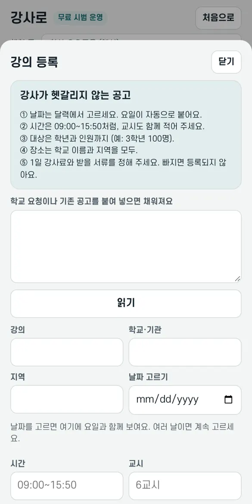
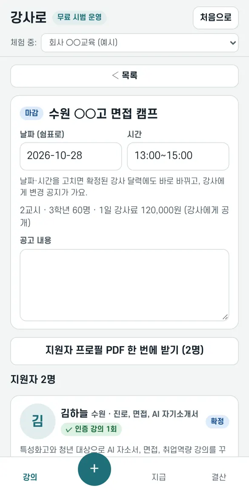
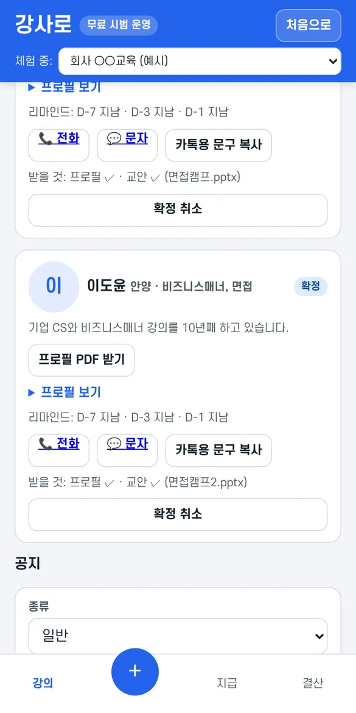
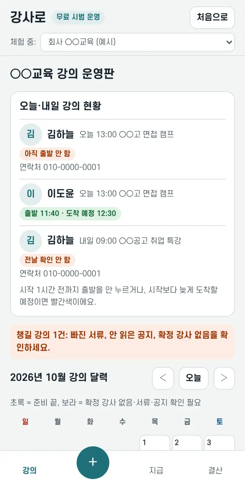
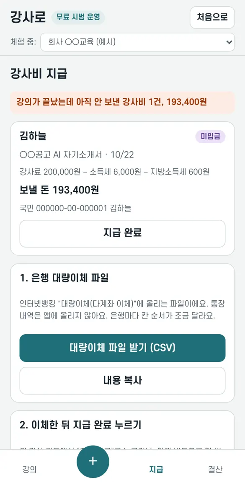
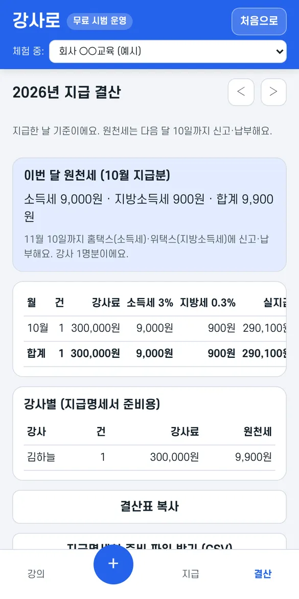

업체 대표님, 강의 운영을 한 화면에서
강의를 올리면 강사 지원·확정·공지·서류·리마인드·강사비 지급까지 한곳에서 이어져요. 처음 한 번만 아래 순서대로 해 보세요.
1가입하기
- 강사로 앱을 열고 구글 계정 또는 메일 링크로 로그인해요. 카톡에서 열었다면 ⋮ → 다른 브라우저로 열기.
- 강의 업체예요를 고르고 업체명·담당자·연락처·사업자등록번호를 넣어 가입하기.
- 사업자등록번호가 맞으면 바로 공고를 올릴 수 있어요. 번호 하나로 업체 하나만 가입돼요.
2우리 강사들 초대하기
위쪽 소개하기에서 내 링크를 복사해 강사 단톡방에 보내요. 아래 문구를 그대로 쓰셔도 돼요.
링크로 강사가 가입하면 양쪽 1주일, 다른 업체가 가입하면 양쪽 1개월 무료 기간이 늘어요 (최대 6개월).
3강의 등록
- 아래 가운데 +를 눌러요.
- 학교 요청이나 기존 공고를 붙여 넣고 읽기를 누르면 칸이 채워져요.
- 날짜는 달력에서 고르고(여러 날 가능), 시간·교시·대상(학년·인원)·장소·1일 강사료·받을 서류를 정해요. 빠진 게 있으면 등록되지 않아요.
- 등록하면 강사들의 공고 탭에 바로 올라가요. 강사료가 공개돼서 강사가 헷갈리지 않아요.

4지원자 보고 확정하기
- 강의 탭에서 강의를 눌러 열어요.
- 지원자마다 분야·소개·경력과 인증 강의(강사로에서 확정·강의·입금까지 확인된 횟수)가 보여요. 지원자 프로필 PDF 한 번에 받기로 학교에 보낼 수도 있어요.
- 고른 강사에게 확정을 눌러요. 그 강사 달력이 바로 '확정'으로 바뀌고 알림이 가요.
- 다 정했으면 모집 마감. 확정하지 않은 지원자는 미선정이 되고 그 강사 달력에서 사라져요.


5공지와 리마인드
- 강의 화면 아래 확정 강사에게 공지 보내기: 주차·장소·준비물 등을 보내면 강사 앱에 뜨고, 누가 안 읽었는지 보여요.
- 강사 카드의 전화·문자·카톡용 문구 복사 버튼으로 바로 연락해요.
- 강의 7일·3일·1일 전 리마인드가 자동으로 나가요.
- 강의 탭 맨 위 오늘·내일 강의 현황에서 전날 확인·출발·도착을 봐요. 시작 1시간 전까지 출발을 안 누르면 빨간색으로 알려 줘요.

6서류 받기
- 강사 카드에 받을 것이 ✓/빠짐으로 보여요. 통장사본·신분증 사본은 강사가 미리 올려 뒀다면 확정과 함께 자동으로 와요.
- 빠진 사람이 있으면 서류 빠진 강사에게 요청 공지 보내기 한 번이면 돼요.
- 주민등록번호가 필요하면 받을 서류에 넣어 두세요. 강사가 한 번 보내면 복사해서 쓰세요. 복사하면 바로 지워지고, 안 해도 30일 뒤 지워져요.
7강사비 지급
- 지급 탭에 강의가 끝났는데 아직 안 보낸 강사비가 모여요 (3.3% 뺀 금액과 계좌까지).
- 대량이체 파일 받기로 인터넷뱅킹 '대량이체'에 올리거나, 한 명씩 이체해요.
- 이체한 뒤 지급 완료를 누르면 강사에게 입금 알림이 가고, 강사가 확인하면 표시돼요.

8결산과 원천세
결산 탭에 이번 달 원천세(소득세 3%·지방소득세 0.3%)와 강사별 지급 내역이 모여요. 다음 달 10일까지 홈택스·위택스 신고에 쓰고, 지급명세서 준비 파일도 받을 수 있어요.

자주 묻는 것
엑셀로 관리하던 일정을 한 번에 옮길 수 있어요?
네. + → 엑셀에서 여러 건 한 번에 올리기에서 엑셀 표를 제목 줄까지 복사해 붙여 넣으면 미리 보기 후 한 번에 등록돼요. 열 이름(날짜·학교·지역·강의명·시간·교시·대상·강사료·내용)을 알아서 찾고, 순서는 상관없어요. 엑셀 양식 받기로 빈 양식도 받을 수 있어요. 이미 강사가 정해진 일정은 '모집 공고로 올리기'를 끄면 업체 달력에 기록만 돼요.
공고가 '확인 대기'로 떠요
강사에게 돈을 요구하거나 외부 메신저로 부르는 표현(선입금, 교재비 입금, 보증금, 가입비, 텔레그램, 오픈카톡 등)이 있거나, 1일 강사료가 100만 원을 넘으면 강사에게 바로 보이지 않고 확인 대기가 돼요. 공고 화면에 어떤 표현 때문인지 나와요. 그 표현을 고쳐 저장하면 바로 다시 검사해서 올라가요. 그대로 두면 운영자가 확인한 뒤 올라가요. 새로 가입한 지 30일이 안 된 업체의 공고는 강사 3명이 신고하면 내려가고, 운영자가 확인해서 문제없으면 다시 올려요.
돈이 들어요?
지금 가입하면 3개월 무료예요. 카드 등록 없이 시작해요. 소개로 쌓인 기간만큼 더 무료로 써요. 무료 기간 뒤에는 한 달에 올리는 강의 수에 따라 베이직(10건 미만, 월 1만 원) · 스탠다드(30건 미만, 월 3만 원) · 프로(30건 이상, 월 5만 원)이에요. 직원이 늘어도 요금은 같아요. 이용 기간이 끝나면 지금까지 한 것은 계속 볼 수 있지만 공고 등록·공지·확정·지급은 잠겨요.
앱에 가입 안 한 강사는요?
앱 공고에 지원하려면 강사도 가입해야 해요. 소개 링크를 보내 주세요. 1분이면 돼요.
직원 여러 명이 같이 관리할 수 있어요?
네. 위의 직원 버튼에서 초대 링크를 만들어 카톡으로 보내면, 직원이 자기 구글·메일로 로그인해서 합류해요. 비밀번호를 나눌 필요가 없어요. 직원은 공고·강사·공지·서류 체크표를 같이 보고 고치고, 공지에는 쓴 사람 이름이 남아요. 업체 정보·서류 양식·직원 관리는 대표만 해요. 지급(정산)은 대표가 직원마다 '정산 권한'을 켜야 보여요. 그만둔 직원은 '내보내기'를 누르면 바로 못 들어와요. 직원이 늘어도 요금은 같아요.
대표님도 직접 강의해요. 강사로도 쓸 수 있어요?
네. 맨 위의 강사로도 쓰기를 누르면 같은 계정에 강사 화면이 하나 더 생겨요. 그다음부터는 ⇄ 강사 화면 / ⇄ 업체 화면 버튼으로 오가요. 달력·결산은 화면마다 따로예요. 우리 공고에 강사 화면에서 지원하고 업체 화면에서 확정하면 강사 달력에도 바로 들어가요.
우리 업체 강사카드·교재카드 양식을 쓰고 싶어요
강의 화면 맨 아래 서류 양식에 한글·워드·엑셀·PDF 파일(650KB 이하)을 올려 두세요. 그 서류를 받는 강의에 확정된 강사가 양식 받기로 내려받아 채워서 올려요. 강사가 낸 서류는 강의 화면의 받기로 내려받아요.
더 궁금한 게 있어요
tobadyclup@naver.com으로 보내 주세요.